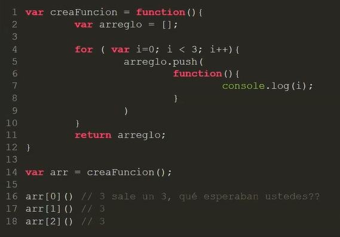
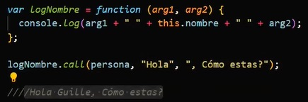

Javascript avanzado II
Closures
Se genera cuando una funcion devuelve otra funcion
Una closure es como una "nube" en donde se almacenan cosas de un contexto de ejecucion que ya se termino,
pero solo tiene acceso a ella la funcion hija de ese contexto.
Por ejemplo se pueden guardar objetos privados que solo la funcion hija puede acceder.

Bind, Call and Apply.
Son 3 metodos que nos permiten manejar el this.
Bind
El contexto de ejecucion del bind se termina, y devuelve una funcion, y el this queda apuntando hacia el objeto que le indique.
Cambia el this por el objeto que le indicamos en una funcion nueva.
Bind ademas acepta mas parametros, el primero siempre es el "this", los siguientes sirven para bindear parametros de una funcion.
Esto se conoce como function currying
Call
El call es lo mismo que Bind, redirige el this, pero no devuelve una funcion.

Apply
Apply funciona igual que call pero recive los argumentos en forma de arreglo.